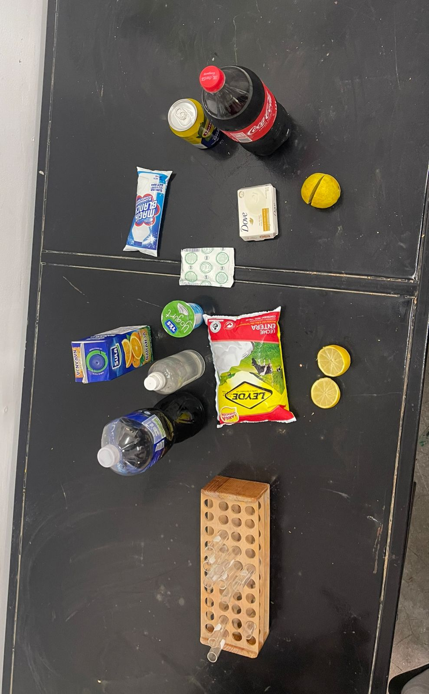

| Start | Introduction and Hypothesis | Materials and Procedure | Results and Conclusions |
|---|
|
1. Test Tubes 2. Cabbage Juice 3. Orange Juice 4. Milk 5. Coca Cola 6. Lemon Juice 7. Yogurt 8. Soap 9. Chlorine 10. Bicarbonate 11. Tea Lipton 12. Alcohol 13. Nelson's and Ronald's pees |
 |
Procedure 1. First we are going to take an amount of cabbage juice and insert it into each test tube.
|